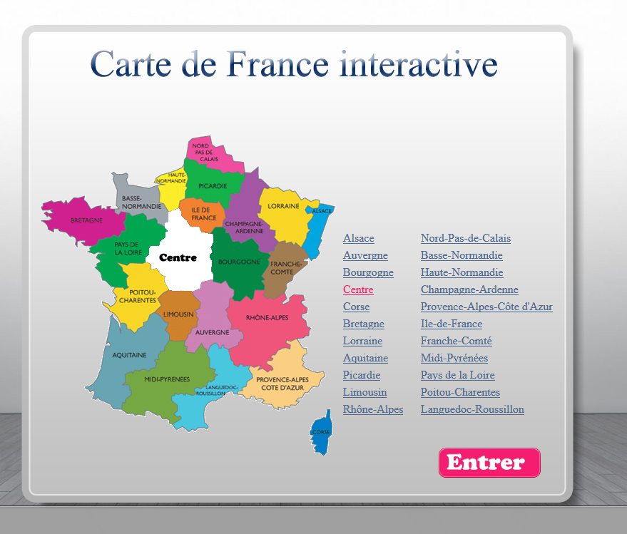

Project Overview
By Jayms Bouyer, Maxence Dufourt, Florian Adrast and Thomas Choulant

Explanation
SAE 15 Project: ANFR open data.
The French National Frequency Agency (ANFR) coordinates the deployment of radio stations across France and ensures that public exposure to electromagnetic fields stays within legal limits. Since 2015, it has published open data on stations above 5 W (excluding the Ministry of Defence, civil aviation and the Ministry of the Interior).
Our goal: using this real-world dataset, to characterize radio installations in France: geographic distribution, technologies and how they have evolved, and operators. The results are presented on an interactive map.
Tools: Python for data processing and visualization, Git/GitHub for version control and coding, Trello for project organization.
Deliverables: GitHub repository (commented code + README), study report, interactive map.